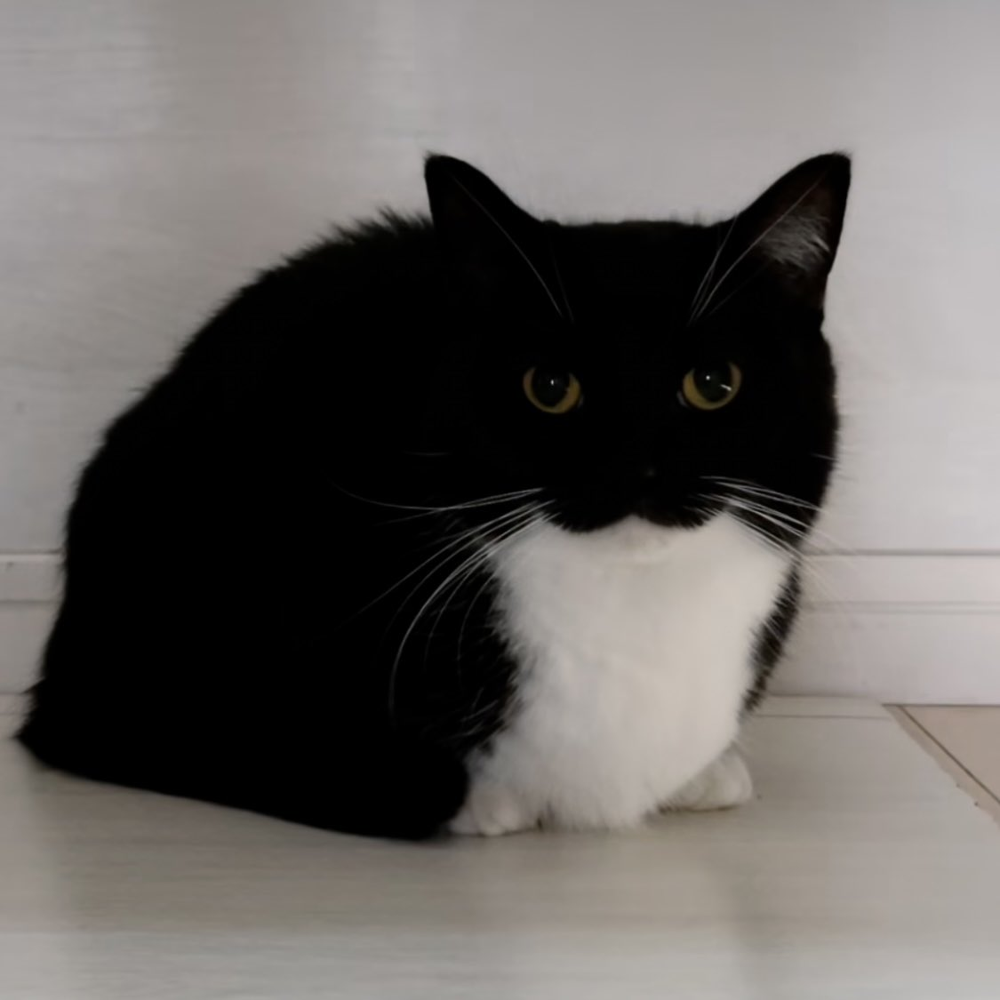

Você encontra um ser estranho
Dê um nome para a criatura:
Dê a ela um dom:
Bondade
Coragem
Força
Inteligência
Determinação
Que emoção ela lhe invoca? (Ela não ouvirá):
Esperança
Apreensão
Carinho
Medo
Recursos Importantes:
Galeria
Como evitar aniquilação
Saciar seus desejos violentos